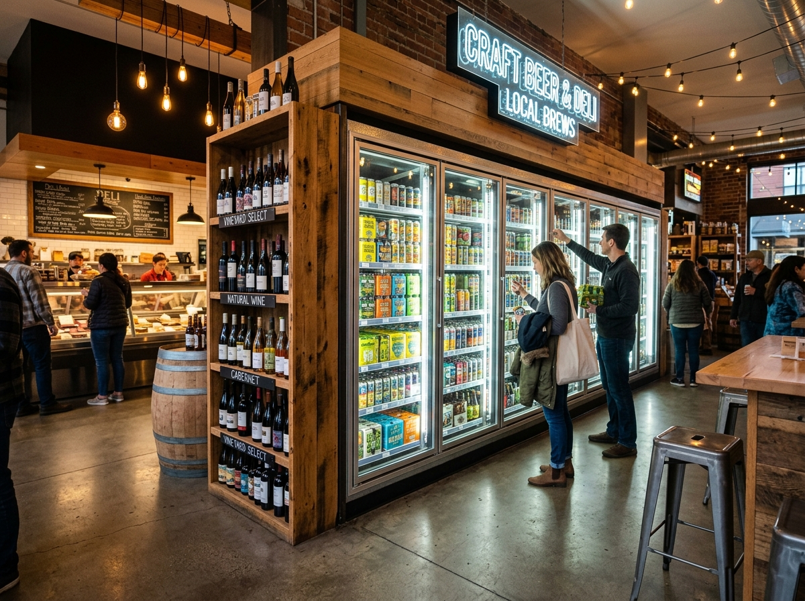

1. NC Craft Cold Cases
Stocking premier North Carolina breweries with rotating IPAs, sours, stouts, pilsners, and hard kombuchas available as singles or 4-packs.
Rhino Market is more than a deli—it’s Charlotte’s neighborhood bottleshoppe and specialty pantry. Browse hundreds of chilled regional North Carolina beers, organic natural wines, fresh local dairy, artisanal hot sauces, and locally roasted coffee beans.

Stocking premier North Carolina breweries with rotating IPAs, sours, stouts, pilsners, and hard kombuchas available as singles or 4-packs.
Featuring organic, biodynamic, and pet-nat natural wines curated from small-production independent vintners around the world.
Partnering with Charlotte's Enderly Coffee Co to brew fresh daily drip and cold brew, complemented by locally made chocolates, honey, and snacks.